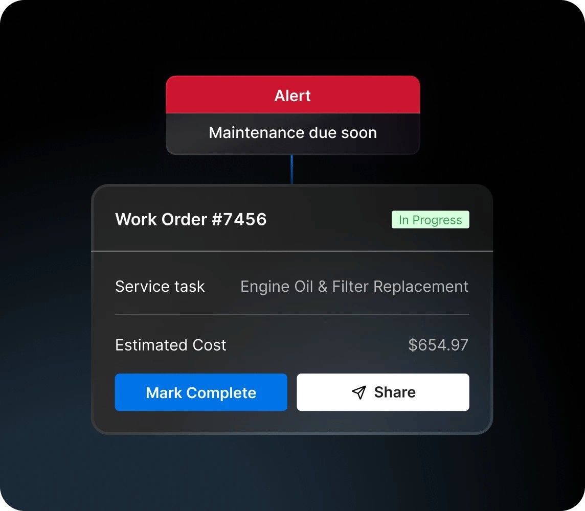

谁用与当下变化
用户是已经采集车辆、司机和安全数据，却仍靠经理追告警的车队运营团队。十月十九日的 Agents 把条件判断与行动串接，让现有数据引出通知和维修流程。当前最具体的切口不是让 AI 自主驾驶，而是某个故障码达到企业标准后建立工单、把车辆标为停用，并让负责人处理。这里的软件价值依附于车辆数据与现有运营平台，并非当天发布了一块新摄像头。日期仅精确到日，因此作为近三日回看，不能保证属于严格二十四小时窗口。
Motive Agents · 物理运营 · 近三日发布
同一项目的完整分析。主阅读页是摘要，本页正文独立计数一次；原截止14:08Z，修订采集在后。

用户是已经采集车辆、司机和安全数据，却仍靠经理追告警的车队运营团队。十月十九日的 Agents 把条件判断与行动串接，让现有数据引出通知和维修流程。当前最具体的切口不是让 AI 自主驾驶，而是某个故障码达到企业标准后建立工单、把车辆标为停用，并让负责人处理。这里的软件价值依附于车辆数据与现有运营平台，并非当天发布了一块新摄像头。日期仅精确到日，因此作为近三日回看，不能保证属于严格二十四小时窗口。
官方博客给出的当前流程是选择预制模板或组合触发条件与动作，再通过邮件、短信、应用提醒和车内语音消息抵达相应人员。但同一页明确把 AI Dashcam Plus 上的语音代理外呼放到今年稍后，把自然语言创建流程、直接描述业务目标和无需配置的 Agent 库放到二〇二七年初。新闻稿某些措辞更宽泛，本稿采用更明确时间表。故障解释、工单和停用状态是运营链条的不同部分，不应把一段未来 Atlas 通话演示当成已完成的道路验收。
PM 推断：故障出现、动作已提交、维修人员已接单、车辆真正修好，至少是四种状态；自动建单不等于问题关闭。重复故障消息可能生成重复工单，连接中断可能让通知与车辆状态不同步，温度背景也会影响怠速判断。这些是待验证失败模式，不是本轮观察到的缺陷。人工替代仍是调度员电话确认、维修主管判断后建单；其优势是能处理现场例外，劣势是逐条协调占时。首先应选择可复核、后果可控的一类提醒，而不是一次把所有安全场景自动化。
采用需要现有 Motive 客户环境、对应数据与功能配置，发布材料引导联系代表，没有可供本轮核验的完整 SKU 价格和所有硬件兼容表。本轮只读原始材料，没有车辆测试、通话或工单创建。建议用历史故障事件进行影子回放，保留人工流程：测量触发正确率、重复建单数、事件到有人确认的时间、漏通知以及最终维修状态一致性。让司机拒接、经理未响应、信号恢复这些情况进入测试。若系统只让工单更多、却不能缩短确认时间，就不能从“动作自动发生”推导出减少停机或事故。